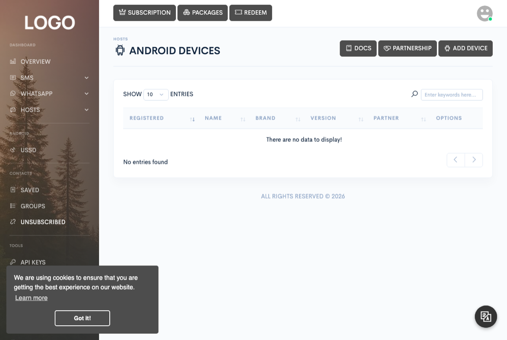

Servers & devices
Android gateway
Turn a spare Android phone into an SMS sender and receiver, pair it with your account, and — if the platform grants you partner status — earn credits by letting other users send through it too.

Gateway/prebuilt/ and you side-load it. That is deliberate, not a gap
waiting to be closed: a gateway exists to send and read SMS in bulk on the account
holder's behalf, and Play's SMS and Call Log permissions policy reserves those
permissions for apps whose core function requires them, which an app of this kind is not
granted. Do not plan a rollout around a Play Store listing, for this app or for a
rebuilt version of it. See
Android developer verification for what this means if
you build your own.
An Android device running the Zender gateway app turns its own SIM card into an SMS sender and receiver that your Zender installation can queue messages against. Devices are managed from Hosts → Android, and every SMS send form's device mode (see the Sending SMS page) targets one of the devices registered here.
Installing the Android app
The app ships with Zender, as Gateway/prebuilt/sms-gateway.apk inside
the release ZIP. Upload it under Admin → Overview → Settings on the Gateway card and it
becomes available to your users from Hosts → Android → Add device, which
offers a download link and a QR code pointing at it. There is no app-store listing —
the app is served from your own installation.
It is deliberately branded neutrally, as SMS Gateway, so it sits comfortably alongside whatever you have named your own service.
Connecting Firebase
Two files are involved, and they are easy to confuse because they work in opposite directions. Both are uploaded under Admin → Overview → Settings on the Gateway card, which shows a badge beside each once it is stored.
| File | What it does | Where to get it |
|---|---|---|
Firebase Credentialsfirebase.json |
Lets your site send notifications to phones. | Firebase console → Project settings → Service accounts → Generate new private key. |
Google Servicesgoogle-services.json |
Lets the app register with Firebase and receive them. | Firebase console → Project settings → Your apps → the Android app you register below. |
To produce the second file, add an Android app to your Firebase project using this exact package name:
dev.titansys.smsgatewayIt has to match exactly, or Firebase will not issue the app a token. No SHA-1
fingerprint is needed — that is for sign-in and dynamic links, not messaging.
Download the generated google-services.json and upload it unmodified.
Zender checks it carries the four values the app needs and refuses it otherwise,
so a wrong file is reported immediately rather than silently failing later.
Pairing a device
Open Hosts → Android → Add device. The dialog shows a QR code carrying your site's address and a single-use pairing code. Open the app on the phone and scan it. That is the whole process, and it is why the app has no login screen to fill in.
The pairing code lasts ten minutes and works once. Closing and reopening the dialog issues a fresh code and invalidates the previous one, so a screenshot of an old code is worthless to anyone who finds it. To pair a second phone, simply open the dialog again.
The app sends its device ID, model, version and manufacturer. Your subscription's device limit is checked, and a phone already registered to your account refreshes rather than duplicating. A phone already linked to a different account is rejected outright.
Building your own version
Gateway/prebuilt/ is the one that is tested and supported. The source
is provided so you can rebrand or adapt it, but once you modify and compile it, the
result is yours to maintain — a build we did not produce cannot be debugged or fixed
for you. If you hit a problem, reproduce it with the supplied APK before asking for
help.
The complete Android Studio project ships in Gateway/src/. What follows
assumes you are comfortable with an Android build.
What you need
| Tool | Version |
|---|---|
| JDK | 17 — the build targets Java 17 bytecode and will not run on an older JDK |
| Android SDK | Platform 35, with build-tools installed |
| Gradle | Nothing to install — use the bundled wrapper (./gradlew), which fetches 8.11.1 itself |
| Kotlin / AGP | 1.9.25 / 8.9.1, both pinned in gradle/libs.versions.toml |
The app targets Android 15 (API 35) and runs on Android 8.0 (API 26) or newer.
Set your server address — this is required
A build from source is made for one Zender, so its address is compiled in
rather than typed by whoever installs the app. Set it in
gradle.properties:
defaultSiteUrl=https://sms.example.com/The build fails with an explanatory error if you leave it empty,
rather than producing an app that can never reach a server. If you would rather not
edit the file, pass it per build with -PdefaultSiteUrl=….
Building
cd Gateway/src
echo "sdk.dir=$ANDROID_HOME" > local.properties
./gradlew assembleReleaseThe result lands in app/build/outputs/apk/release/. With no signing
configuration (below) it is named app-release-unsigned.apk, and Android
will refuse to install it.
Signing
Create a keystore, then a keystore.properties file next to
gradle.properties:
storeFile=/absolute/path/to/your.keystore
storePassword=…
keyAlias=…
keyPassword=…The build uses it when present and ignores it when absent, so the project still compiles for anyone without your key. Keep that file and the keystore out of version control — together they are the only thing preventing someone else from publishing updates to your app.
Android developer verification — required from September 2026
Android is introducing a requirement that apps be registered by a verified developer before they can be installed on certified Android devices. Enforcement begins 30 September 2026, initially for select regions. The requirement follows the developer who signed the app, so it reaches apps distributed outside the Play Store, not only apps published on it.
| Which build | What you have to do |
|---|---|
The supplied APKGateway/prebuilt/sms-gateway.apk |
Nothing. It is signed with our key and registered under our verified developer account. It installs and updates normally, and this deadline does not affect you. |
| Your own build from Gateway/src/ |
Verify yourself as a developer and register this app's package name. Your build is signed with your keystore, which belongs to no verified developer until you do. |
Distributing outside Play does not exempt you from verification — that is the point of the change: it applies to how the app reaches the device, so a directly installed APK is covered too. What it takes:
- Verify your identity in the Android Developer Console. That is the account intended for developers who publish only outside Google Play, which is where you are. Expect to supply a legal name, address, email and phone number; organisations are additionally asked for a D‑U‑N‑S number and a verified website, and a government ID may be requested. (Outside-Play apps can also be registered through Play Console if you already run one for other apps — but you are not listing this app on the store either way.)
- Register the package name and your signing certificate's SHA‑256 fingerprint. This is the route that applies to you: because the app never goes near a store listing, the fingerprint is what connects your signing key to your verified account. Take it from the keystore you created in the previous section, using either command below — they print the same value.
Read the fingerprint off your keystore — this asks for the store password:
keytool -list -v -keystore your.keystore -alias youraliasOr straight off an APK you have already built, which needs no password at all:
apksigner verify --print-certs app/build/outputs/apk/release/app-release.apkBoth print a SHA-256 line — a colon-separated string of 32 hex pairs. That
is the value to register. Register the fingerprint of the key you actually ship with: if
you build unsigned or with a debug key by mistake, you will be registering the wrong
certificate and installs will still be refused.
Google's own documentation is the authority here, and the detail is still moving: developer.android.com/developer-verification.
Release builds are minified
assembleRelease runs R8 with shrinking enabled. If you add code that
depends on reflection — another JSON model, for instance — add keep rules to
app/proguard-rules.pro, or it will work in a debug build and fail in
release. The rules already there cover the existing API models and are a good
template.
Renaming and rebranding
Everything a rebrand touches sits in two files. Nothing in the Kotlin source needs to change.
| To change | Edit |
|---|---|
| Package name — the app's identity on the device | gradle/libs.versions.toml → app-version-appId |
| The name shown under the icon | app/src/main/res/values/strings.xml →
app_launcher_name |
| Icon and logo | app/src/main/res/mipmap-*/ and
app/src/main/res/drawable/logo.png |
| Prefill the site address on the sign-in screen | gradle.properties → defaultSiteUrl |
drawable/logo.png with your own and build from source; your logo then
appears on the pairing screen.
Changing the package name is safe on its own: the code namespace is set separately and does not follow it, so a rename cannot break the build.
google-services.json, and upload that instead. The previous file will
not work for a differently-named app.
Your own build is signed with your own key, so Android will not install it as an update over the supplied app. Uninstall that first — and note a phone paired with it has to be paired again afterwards.
Choosing SIM slots
SIM selection isn't a device setting — it's chosen per message. Every SMS send form
(Quick send, bulk, and the Excel upload's sim column) lets you pick
SIM 1 or SIM 2 for that specific send, and the value is always sanitized to one of
those two on the way in. A single-SIM device simply ignores a request for the slot
it doesn't have.
The one place SIM slots are configured on the device itself is for partner-shared devices, covered next: in Edit device, a partner can restrict a globally shared device to SIM 1, SIM 2, or both, which limits which slot other users' sends are allowed to land on when they use that device through the shared/global pool rather than their own.
Sharing your device as a partner
If the platform owner has given your account partner status (set from Admin → Users, not something you can turn on yourself), Edit device unlocks a set of sharing controls that an ordinary account's devices don't have:
- Global status — turns sharing on or off for this device. While enabled, other users on the platform can send through it and pay for the privilege out of their own credits; while disabled, it's yours alone again.
- Rate — what you charge per message sent through your device, in your device's own currency.
- Global priority — whether shared sends through this device jump the queue the same way a priority send would.
- Global slots — which SIM(s) are open to other users' sends; you can keep one SIM for yourself while sharing the other.
Every message sent through your shared device deducts your rate from the sender's credits and adds it to your earnings balance, minus the platform's own commission. Once your earnings clear the platform's minimum payout threshold, you can request a cash-out from your own dashboard; see the Billing page's Payouts section for what happens to that request on the admin side.
Battery and background limits
Manufacturer-specific power management (common on Xiaomi, Huawei, Oppo, and similar skins) is frequently more aggressive than stock Android and can override the standard battery-optimization exclusion. If a device that's excluded from Android's own battery optimization still drops offline, check the phone maker's own battery or "auto-start" manager next.
Delivery reports
After the app sends an SMS, it reports the outcome back to Zender, which marks the
message sent or failed and stores the device's own delivery code alongside it. The
codes the app can report are SMS_SENT, SMS_DELIVERED,
SMS_PENDING, DELIVERY_PENDING, and DELIVERY_FAILED;
these drive both the live dashboard notification for that message and any webhook or
automated action tied to it. See the Sending SMS page for how these statuses appear
in the Queue, Sent, and Campaigns tables.
Receiving can be turned off per device from Edit device if a device is only ever used for sending — doing so also disables receive-triggered features such as webhooks and auto-reply for that device, since there's nothing left to trigger them.